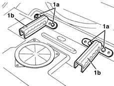

7050A71 SUPPORT/GUIDES for individual rear seat, left or right or centre- R.R. with seat removed
- Path
- Procedures > 70 FITTINGS > 7050 REAR SEATS > 7050A rear seat assembly > 7050A71 SUPPORT/GUIDES for individual rear seat, left or right or centre- R.R. with seat removed
- Kind
- repair procedure (removal / refitting; the operation number is the code)
- Applies to
- all engines; all production periods
- Interactive page
- https://sloeber94.github.io/elrnDB-lYpsln/en/#/2429654
Applies to: all engines; all production periods
 Removing
Removing
 Refitting
Refitting7050A14 split rear seat assembly - r+r (alternatively)
1. Undo the bolts (1a) and remove the seat retainer guide (1b).

Applies to: all engines; all production periods
Refitting
RemovingCheck that the guides are not damaged.
Position the guides and secure them using the bolts.
 | Fastening | Component | Ø | Value (daNm) |
|---|---|---|---|---|
- | Bolt | REAR SEAT CUSHION BRACKET | M8 | 4.0 |
7050A14 split rear seat assembly - r+r (alternatively)